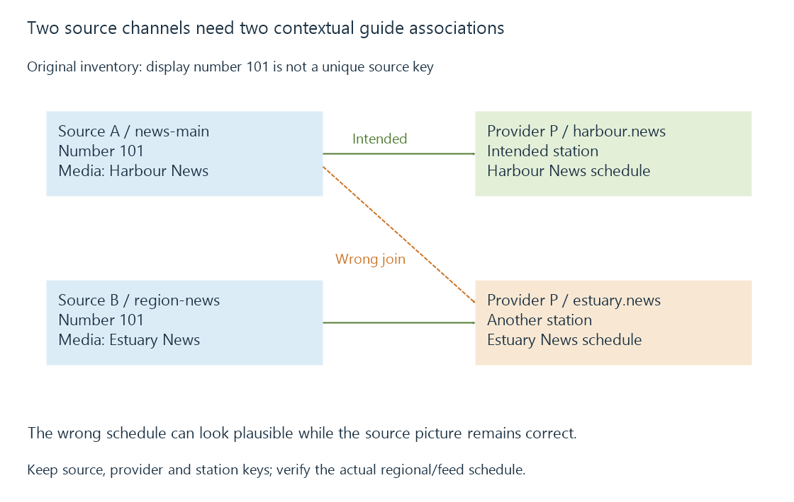

Mapping source channels to guide stations
Channel mapping associates a selectable source service with the corresponding guide station, preserving station and provider context when names or numbers are ambiguous.
A source can deliver Harbour News while the guide describes Estuary News. The media acquisition succeeded; the source channel was associated with the wrong guide station.
Channel mapping is that association. It connects the service a viewer can tune with the programme schedule intended for that service.
Keep both sides of the association
Use these invented identities:
{
"sourceChannel": {"source": "A", "key": "news-main", "number": "101"},
"guideStation": {"provider": "P", "key": "harbour.news"},
"mapping": {"A/news-main": "P/harbour.news"}
}
The source channel’s key selects media within source A. The guide station’s key selects descriptions within provider P. Display number 101 is a label, not the complete identity of either side.

If another source B exposes a different station also numbered 101, it needs its own association. Merging on the display number alone can attach the same schedule to two unrelated media sources.
Similarly, another guide provider can have its own harbour.news key. Retaining provider context prevents an equal local key from silently switching datasets.
A name match can look convincing
Suppose two guide entries are named “Harbour Network,” one for the coast feed and one for an inland feed. Both can have the right logo and many of the same programmes.
They may differ during regional news, advertising breaks or delayed airings. A single familiar programme at one time is therefore weaker evidence than several distinctive slots.
A useful comparison includes:
| Comparison | Identity information it adds |
|---|---|
| Local/regional news | Which station or feed is present |
| A time-delayed programme | Whether this is the intended time-shifted variant |
| Several adjacent slots | Whether the schedule alignment persists |
| Provider station key | Which descriptive inventory was actually selected |
The television number, name, region and feed variant are matching evidence. None should overwrite a stable source key merely to make the label look right.
Emby exposes the guide choice
Emby attempts automatic matches and allows selecting the guide provider and station manually. Its channel mapping documentation describes that configuration.
The important consequence is conceptual: correcting the guide association does not retune the underlying source or change its video codec. It changes which descriptions belong to the selected channel.
With extended M3U lists, a tvg-id can assist that association. Its meaning depends on the configured guide/importer; the ID must actually correspond to the intended station in that data.
A mapping correction affects future decisions
Programme-based recording begins from guide events. If an event belongs to the wrong mapped station, its title and interval can describe something other than the media that will be acquired.
For example, Harbour News carries a local programme at 18:00 while the incorrectly associated guide advertises a drama. A request created from that drama’s guide row still needs a concrete source channel. The mismatch can yield a perfectly readable recording of the wrong programme.
After a correction, the guide can describe the intended station while a previously created timer retains older information according to its own update rules. Inspect the intended airing, selected channel and requested interval together.
A mapping error, a time-zone error and stale programme data can all make a guide look wrong. The first changes which station’s schedule is attached; the second changes interpreted instants; the third leaves an outdated revision. Their corrections act on different inputs.
See Also
- Channel lineups and source identity
- Extended M3U channel lists
- Emby guide data and lineup selection
- XMLTV listings: channels, programmes and time